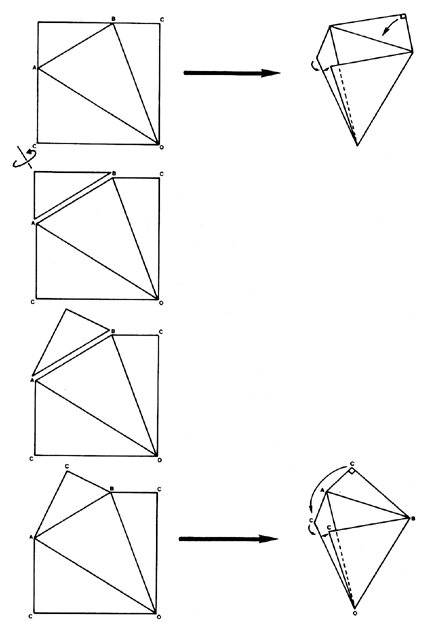

Fig. 986.515 T Quanta Module Foldable from Square: One of the triangular corners may be hinged and reoriented to close the open end of the folded tetrahedron.
Copyright © 1997 Estate of R. Buckminster Fuller